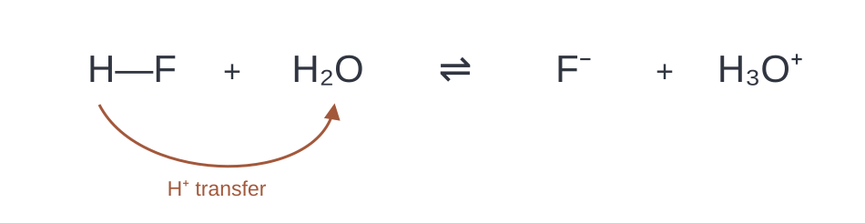
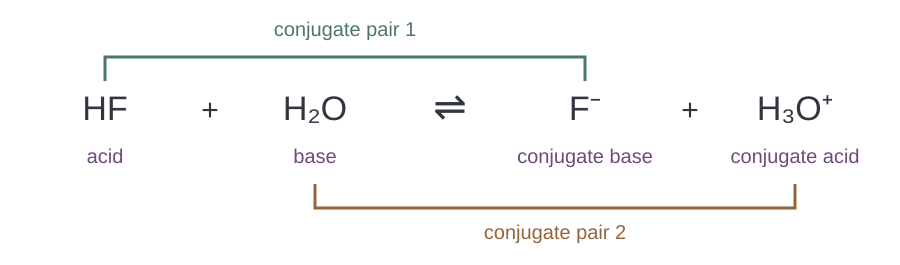
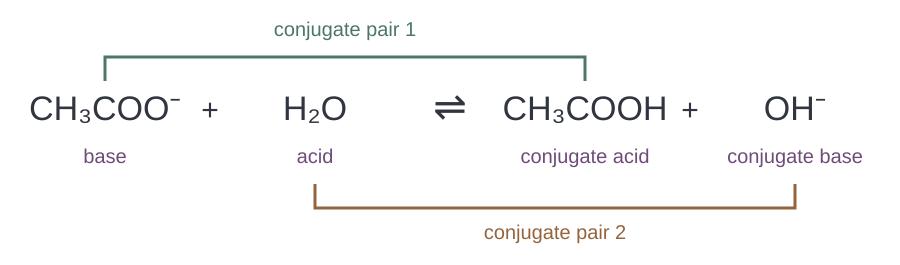
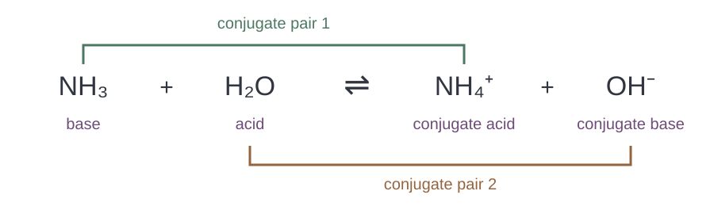
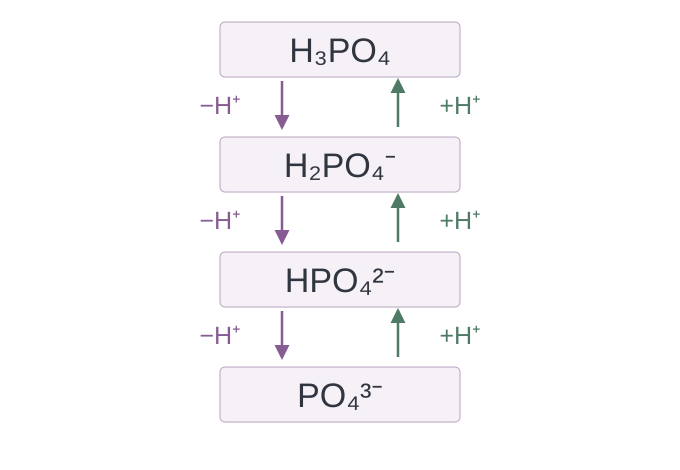
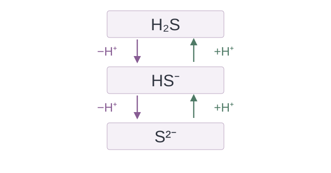
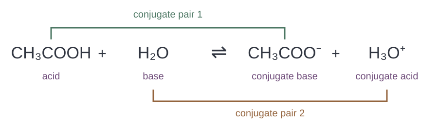
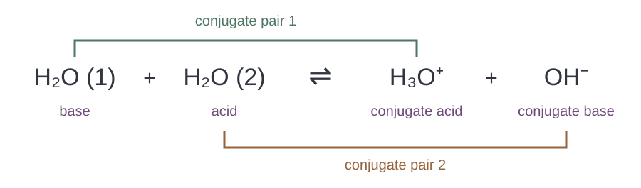

เคมี • เล่ม 4 • บทที่ 10 กรด–เบส
10.2 คู่กรด–เบส
ติดตามโปรตอน สร้างคู่จากสูตร แล้วใช้เหตุผลกับปฏิกิริยาใหม่
เขียนสาระสำคัญใต้หัวข้อ และตอบแต่ละคำถามในพื้นที่ของข้อนั้น เปิดเฉลยเพื่อตรวจวิธีคิด สูตร และประจุ
1 จากการถ่ายโอนโปรตอนสู่คู่กรด–เบส
ในหัวข้อ 10.1 เราระบุผู้ให้และผู้รับโปรตอนแล้ว ต่อไปดูว่าสารแต่ละชนิดเปลี่ยนเป็นสารใด แล้วพิจารณาความสัมพันธ์ของสารก่อนและหลังการถ่ายโอน

\[\ce{HF(aq) + H2O(l) <=> F-(aq) + H3O+(aq)}\]
คำถาม 1
คำถาม 2
คำถาม 3
คำถาม 4
คู่เบสของกรด
คู่กรดของเบส
การระบุคู่กรด–เบส
ตัวอย่าง 1 · คู่ทั้งสองในปฏิกิริยาของ HF

HF / F−: HF ให้โปรตอน และ H3O+ / H2O: น้ำรับโปรตอน โดยแต่ละคู่เชื่อมสารตั้งต้นกับผลิตภัณฑ์
คำถาม 5
2 หาคู่จากสูตรและประจุ
ใช้ความสัมพันธ์ของอนุภาคก่อน–หลังเพื่อหาคู่กรดหรือคู่เบสได้ แม้โจทย์ยังไม่ให้สมการเต็ม
คู่กรด–เบสต่างกันหนึ่งโปรตอน
จำนวน H กับประจุเปลี่ยนพร้อมกัน
การเขียนคู่เบส
การเขียนคู่กรด
คำถาม 6
คำถาม 7
คำถาม 8
คำถาม 9
คำถาม 10
คำถาม 11
คำถาม 12
คำถาม 13
3 ระบุคู่ในปฏิกิริยา
ใช้ตัวอย่างที่น้ำเปลี่ยนบทบาท แล้วระบุคู่ด้วยการติดตามอนุภาค ไม่อาศัยตำแหน่งซ้าย–ขวาหรือเครื่องหมายประจุเพียงอย่างเดียว
การอ่านสมการเพื่อหาคู่
ตัวอย่าง 2 · แอซีเตตกับน้ำ
\[\ce{CH3COO-(aq) + H2O(l) <=> CH3COOH(aq) + OH-(aq)}\]
ระบุบทบาทในปฏิกิริยาไปข้างหน้าและคู่ทั้งสอง
CH3COO− รับ H⁺ จึงเป็นเบสและมีคู่กรดคือ CH3COOH น้ำให้ H⁺ จึงเป็นกรดและมีคู่เบสคือ OH− คู่คือ CH3COOH / CH3COO− และ H2O / OH−
ตัวอย่าง 3 · แอมโมเนียกับน้ำ
\[\ce{NH3(g) + H2O(l) <=> NH4+(aq) + OH-(aq)}\]
ติดตามโปรตอนจากสารตั้งต้นไปยังผลิตภัณฑ์
NH3 รับ H⁺ เป็น NH4+ น้ำให้ H⁺ เป็น OH− จึงได้คู่ NH4+ / NH3 และ H2O / OH− แผนภาพละสถานะเพื่อเน้นการจับคู่ ส่วนสมการระบุแอมโมเนียที่เติมจากสถานะแก๊สตามต้นฉบับ
คำถาม 14
ตรวจสอบความเข้าใจ หน้า 10 · ข้อ 1
\[\ce{HNO3(aq) + H2O(l) -> H3O+(aq) + NO3-(aq)}\]
ระบุบทบาทและคู่ทั้งสองHNO3 เป็นกรด ให้ H⁺ แล้วได้ NO3−; H2O เป็นเบส รับ H⁺ แล้วได้ H3O+
คู่กรด–เบสคือ HNO3 / NO3− และ H3O+ / H2O
ตรวจสอบความเข้าใจ หน้า 10 · ข้อ 2
\[\ce{NH2-(aq) + H2O(l) -> NH3(aq) + OH-(aq)}\]
ระบุบทบาทและคู่ทั้งสองH2O เป็นกรด ให้ H⁺ แล้วได้ OH−; NH2− เป็นเบส รับ H⁺ แล้วได้ NH3
คู่กรด–เบสคือ H2O / OH− และ NH3 / NH2−
ตรวจสอบความเข้าใจ หน้า 10 · ข้อ 3
\[\ce{HCOOH(aq) + H2O(l) <=> HCOO-(aq) + H3O+(aq)}\]
ระบุบทบาทและคู่ทั้งสองHCOOH เป็นกรด ให้ H⁺ แล้วได้ HCOO−; H2O เป็นเบส รับ H⁺ แล้วได้ H3O+
คู่กรด–เบสคือ HCOOH / HCOO− และ H3O+ / H2O
ตรวจสอบความเข้าใจ หน้า 10 · ข้อ 4
\[\ce{CH3NH2(g) + H2O(l) <=> CH3NH3+(aq) + OH-(aq)}\]
ระบุบทบาทและคู่ทั้งสองH2O เป็นกรด ให้ H⁺ แล้วได้ OH−; CH3NH2 เป็นเบส รับ H⁺ แล้วได้ CH3NH3+
คู่กรด–เบสคือ H2O / OH− และ CH3NH3+ / CH3NH2
คำถาม 15
\[\ce{H2O(l) + HNO2(aq) <=> NO2-(aq) + H3O+(aq)}\]
เขียนคู่กรด–เบสทั้งสองคู่และอธิบาย แม้ลำดับสารต่างจากตัวอย่างคำถาม 16
\[\ce{HF(aq) + NH3(aq) <=> F-(aq) + NH4+(aq)}\]
ระบุคู่ทั้งสอง โดยสมการนี้ไม่มีน้ำเขียนเป็นสารตั้งต้นคำถาม 17
\[\ce{CH3COOH(aq) + OH-(aq) <=> CH3COO-(aq) + H2O(l)}\]
ระบุคู่ของแอซีติกและคู่ของไฮดรอกไซด์ พร้อมบอกบทบาทไปข้างหน้า4 กรดหลายโปรตอนและการเปลี่ยนทีละขั้น
พิจารณาว่าแต่ละขั้นให้หรือรับ H⁺ กี่ตัว แล้วจับคู่เฉพาะอนุภาคที่เปลี่ยนถึงกันในหนึ่งขั้น
กรดมอโนโพรติก
กรดพอลิโพรติก
คำถาม 18

คำถาม 19
\[\ce{H3PO4(aq) + H2O(l) <=> H2PO4-(aq) + H3O+(aq)}\]
ขั้นที่ 1: ระบุคู่กรด–เบสทั้งสองคู่คำถาม 20
\[\ce{H2PO4-(aq) + H2O(l) <=> HPO4^2-(aq) + H3O+(aq)}\]
ขั้นที่ 2: ระบุคู่กรด–เบสทั้งสองคู่คำถาม 21
\[\ce{HPO4^2-(aq) + H2O(l) <=> PO4^3-(aq) + H3O+(aq)}\]
ขั้นที่ 3: ระบุคู่กรด–เบสทั้งสองคู่
คำถาม 22
\[\ce{S^2-(aq) + H2O(l) <=> HS-(aq) + OH-(aq)}\]
ระบุคู่ทั้งสองและบทบาทของน้ำคำถาม 23
\[\ce{HS-(aq) + H2O(l) <=> H2S(aq) + OH-(aq)}\]
ระบุคู่ทั้งสองและบทบาทของน้ำคู่ของแต่ละขั้น
| คู่กรด | สารที่กำหนด | คู่เบส |
|---|---|---|
| — | H3PO4 | H2PO4− |
H3PO4 | H2PO4− | HPO42− |
| — | H2S | HS− |
H2S | HS− | S2− |
คำถาม 24
5 สารที่ให้และรับโปรตอนได้
อนุภาคบางชนิดให้โปรตอนในปฏิกิริยาหนึ่ง และรับโปรตอนในอีกปฏิกิริยาหนึ่งได้ จึงต้องพิจารณาสารที่ทำปฏิกิริยาด้วยและสมการที่กำหนด
สารที่เป็นได้ทั้งกรดและเบส (แอมโฟเทอริก)
คำถาม 25
คำถาม 26
ชวนคิด หน้า 13
ตัวอย่าง 4 · ก
\[\ce{HCO3-(aq) + H2O(l) <=> H2CO3(aq) + OH-(aq)}\]
HCO₃⁻ รับ H⁺ เป็น H₂CO₃ คู่คือ H2CO3 / HCO3−; น้ำให้ H⁺ คู่คือ H2O / OH−
ตัวอย่าง 4 · ข
\[\ce{HCO3-(aq) + H2O(l) <=> CO3^2-(aq) + H3O+(aq)}\]
HCO₃⁻ ให้ H⁺ เป็น CO₃²⁻ คู่คือ HCO3− / CO32−; น้ำรับ H⁺ คู่คือ H3O+ / H2O
คำถาม 27
คำถาม 28
\[\ce{H2PO4-(aq) + HBr(aq)} \longrightarrow \ldots\]
\[\ce{H2PO4-(aq) + HBr(aq) -> H3PO4(aq) + Br-(aq)}\]
H₂PO₄⁻ เป็นเบส คู่กรดคือ H₃PO₄; HBr เป็นกรด คู่เบสคือ Br⁻ คู่ทั้งสองคือ H3PO4 / H2PO4− และ HBr / Br−
คำถาม 29
\[\ce{H2PO4-(aq) + OH-(aq)} \longrightarrow \ldots\]
\[\ce{H2PO4-(aq) + OH-(aq) -> HPO4^2-(aq) + H2O(l)}\]
H₂PO₄⁻ เป็นกรด คู่เบสคือ HPO₄²⁻; OH⁻ เป็นเบส คู่กรดคือน้ำ คู่คือ H2PO4− / HPO42− และ H2O / OH−
6 แบบฝึกหัด 10.2
แสดงเหตุผลและตรวจจำนวนอะตอมกับประจุของสมการ สำหรับข้อที่ให้เขียนแผนภาพ ให้เชื่อมอนุภาคที่ต่างกันหนึ่ง H⁺
แบบฝึกหัด 10.2 · ข้อ 1.1
\[\ce{NH3(aq) + H2O(l) <=> NH4+(aq) + OH-(aq)}\]
H2O ให้ H⁺ แล้วได้ OH−; NH3 รับ H⁺ แล้วได้ NH4+. คู่คือ H2O / OH− และ NH4+ / NH3
แบบฝึกหัด 10.2 · ข้อ 1.2
\[\ce{CH3COOH(aq) + H2O(l) <=> CH3COO-(aq) + H3O+(aq)}\]

CH3COOH ให้ H⁺ แล้วได้ CH3COO−; H2O รับ H⁺ แล้วได้ H3O+. คู่คือ CH3COOH / CH3COO− และ H3O+ / H2O
แบบฝึกหัด 10.2 · ข้อ 2.1
แบบฝึกหัด 10.2 · ข้อ 2.2
แบบฝึกหัด 10.2 · ข้อ 2.3
แบบฝึกหัด 10.2 · ข้อ 2.4
แบบฝึกหัด 10.2 · ข้อ 3.1
แบบฝึกหัด 10.2 · ข้อ 3.2
แบบฝึกหัด 10.2 · ข้อ 3.3
แบบฝึกหัด 10.2 · ข้อ 3.4
แบบฝึกหัด 10.2 · ข้อ 4
\[\ce{H2O(l) + H2O(l) <=> H3O+(aq) + OH-(aq)}\]

น้ำโมเลกุลที่ให้ H⁺ เป็นกรด มีคู่เบสคือ OH⁻; น้ำอีกโมเลกุลรับ H⁺ เป็นเบส มีคู่กรดคือ H₃O⁺ คู่ทั้งสองคือ H2O / OH− และ H3O+ / H2O อะตอมและประจุรวมดุลกัน
7 ปัญหาคู่กรด–เบส
ใช้ความสัมพันธ์ที่ว่าคู่กรด–เบสต่างกันหนึ่งโปรตอนอธิบายคำตอบ และตรวจประจุทุกครั้ง
คำถาม 30
\[\ce{H2PO4-(aq) + NH3(aq) <=> HPO4^2-(aq) + NH4+(aq)}\]
ระบุกรด เบส และคู่กรด–เบสทั้งสองคู่คำถาม 31
คำถาม 32
คำถาม 33
\[\ce{HSO4-(aq) + H2O(l) <=> SO4^2-(aq) + H3O+(aq)}\]
คำกล่าวว่า “สารประจุลบทุกชนิดต้องเป็นเบส” ใช้กับสมการนี้ได้หรือไม่?คำถาม 34
\[\ce{NH4+(aq) + OH-(aq) -> NH3(aq) + H2O(l)}\]
นักเรียนจับ NH₄⁺ กับ OH⁻ เป็นคู่กัน จงแก้และอธิบายคำถาม 35
คำถาม 36
\[\ce{HSO3-(aq) + H2O(l) <=> SO3^2-(aq) + H3O+(aq)}\]
HSO₃⁻ ให้ H⁺ คู่คือ HSO3− / SO32−; น้ำรับ H⁺ คู่คือ H3O+ / H2O ประจุรวมทั้งสองข้างเป็น −1
คำถาม 37
\[\ce{HSO3-(aq) + H2O(l) <=> H2SO3(aq) + OH-(aq)}\]
HSO₃⁻ รับ H⁺ คู่คือ H2SO3 / HSO3−; น้ำให้ H⁺ คู่คือ H2O / OH− ประจุรวมทั้งสองข้างเป็น −1 การเขียนสองสมการแสดงความสามารถทั้งสอง ไม่ได้บอกว่าทั้งสองเกิดมากเท่ากัน
Chemistry • Book 4 • Chapter 10 Acids and Bases
10.2 Conjugate Acid–Base Pairs
Track protons, build partners from formulas, and reason through new reactions.
Complete the notes and use the space under each question. Reveal solutions to check reasoning, formulas and charges.
1 From proton transfer to conjugate pairs
In section 10.1 we identified proton donors and acceptors. Now follow each substance as it gains or loses a proton and compare its starting and final forms.
\[\ce{HF(aq) + H2O(l) <=> F-(aq) + H3O+(aq)}\]
Question 1
Question 2
Question 3
Question 4
Conjugate base of an acid
Conjugate acid of a base
Identifying conjugate pairs
Example 1 · Both pairs in the HF reaction
HF / F−: HF donates a proton. H3O+ / H2O: water accepts a proton. Each pair links a reactant to its related product.
Question 5
2 Finding partners from formulas and charges
Compare each substance before and after it gains or loses H⁺, even when no full equation is given.
Conjugate partners differ by one proton
Hydrogen count and charge change together
Writing a conjugate base
Writing a conjugate acid
Question 6
Question 7
Question 8
Question 9
Question 10
Question 11
Question 12
Question 13
3 Identifying pairs in reactions
Compare reactions in which water changes its role. Follow how each substance changes, rather than using only its position in the equation or its charge.
Reading an equation to find pairs
Example 2 · Acetate and water
\[\ce{CH3COO-(aq) + H2O(l) <=> CH3COOH(aq) + OH-(aq)}\]
Identify the forward roles and both conjugate pairs.CH3COO− accepts H⁺ and is a base; its conjugate acid is CH3COOH. Water donates H⁺ and is an acid; its conjugate base is OH−. The pairs are CH3COOH / CH3COO− and H2O / OH−.
Example 3 · Ammonia and water
\[\ce{NH3(g) + H2O(l) <=> NH4+(aq) + OH-(aq)}\]
Track the proton from reactants to products.NH3 accepts H⁺ to become NH4+; water donates H⁺ to become OH−. The pairs are NH4+ / NH3 and H2O / OH−. The diagram omits states to focus on pairs; the equation follows the source’s gaseous ammonia added to water.
Question 14
IPST understanding p.10 · Q1
\[\ce{HNO3(aq) + H2O(l) -> H3O+(aq) + NO3-(aq)}\]
Identify the roles and both pairs.HNO3 is the acid: it donates H⁺ to form NO3−. H2O is the base: it accepts H⁺ to form H3O+.
Conjugate pairs: HNO3 / NO3− and H3O+ / H2O.
IPST understanding p.10 · Q2
\[\ce{NH2-(aq) + H2O(l) -> NH3(aq) + OH-(aq)}\]
Identify the roles and both pairs.H2O is the acid: it donates H⁺ to form OH−. NH2− is the base: it accepts H⁺ to form NH3.
Conjugate pairs: H2O / OH− and NH3 / NH2−.
IPST understanding p.10 · Q3
\[\ce{HCOOH(aq) + H2O(l) <=> HCOO-(aq) + H3O+(aq)}\]
Identify the roles and both pairs.HCOOH is the acid: it donates H⁺ to form HCOO−. H2O is the base: it accepts H⁺ to form H3O+.
Conjugate pairs: HCOOH / HCOO− and H3O+ / H2O.
IPST understanding p.10 · Q4
\[\ce{CH3NH2(g) + H2O(l) <=> CH3NH3+(aq) + OH-(aq)}\]
Identify the roles and both pairs.H2O is the acid: it donates H⁺ to form OH−. CH3NH2 is the base: it accepts H⁺ to form CH3NH3+.
Conjugate pairs: H2O / OH− and CH3NH3+ / CH3NH2.
Question 15
\[\ce{H2O(l) + HNO2(aq) <=> NO2-(aq) + H3O+(aq)}\]
Identify and explain both pairs despite the different order of substances.Question 16
\[\ce{HF(aq) + NH3(aq) <=> F-(aq) + NH4+(aq)}\]
Identify both pairs; water is not written as a reactant.Question 17
\[\ce{CH3COOH(aq) + OH-(aq) <=> CH3COO-(aq) + H2O(l)}\]
Identify the acetate-related pair and the hydroxide-related pair, with forward roles.4 Multiple protons, one transfer at a time
Count the H⁺ transferred in each step and pair particles that differ by one H⁺.
Monoprotic acids
Polyprotic acids
Question 18
Question 19
\[\ce{H3PO4(aq) + H2O(l) <=> H2PO4-(aq) + H3O+(aq)}\]
Step 1: identify both conjugate pairs.Question 20
\[\ce{H2PO4-(aq) + H2O(l) <=> HPO4^2-(aq) + H3O+(aq)}\]
Step 2: identify both conjugate pairs.Question 21
\[\ce{HPO4^2-(aq) + H2O(l) <=> PO4^3-(aq) + H3O+(aq)}\]
Step 3: identify both conjugate pairs.Question 22
\[\ce{S^2-(aq) + H2O(l) <=> HS-(aq) + OH-(aq)}\]
Identify both pairs and the role of water.Question 23
\[\ce{HS-(aq) + H2O(l) <=> H2S(aq) + OH-(aq)}\]
Identify both pairs and the role of water.Partners in each step
| Conjugate acid | Given substance | Conjugate base |
|---|---|---|
| — | H3PO4 | H2PO4− |
H3PO4 | H2PO4− | HPO42− |
| — | H2S | HS− |
H2S | HS− | S2− |
Question 24
5 Substances that can donate or accept protons
A substance may donate a proton in one reaction and accept one in another. Examine its reaction partner and the stated equation.
Substances that can act as acids or bases
Question 25
Question 26
IPST “Think” question, p.13
Example 4 · (a)
\[\ce{HCO3-(aq) + H2O(l) <=> H2CO3(aq) + OH-(aq)}\]
HCO₃⁻ accepts H⁺ to become H₂CO₃: H2CO3 / HCO3−. Water donates H⁺: H2O / OH−.
Example 4 · (b)
\[\ce{HCO3-(aq) + H2O(l) <=> CO3^2-(aq) + H3O+(aq)}\]
HCO₃⁻ donates H⁺ to become CO₃²⁻: HCO3− / CO32−. Water accepts H⁺: H3O+ / H2O.
Question 27
Question 28
\[\ce{H2PO4-(aq) + HBr(aq)} \longrightarrow \ldots\]
\[\ce{H2PO4-(aq) + HBr(aq) -> H3PO4(aq) + Br-(aq)}\]
H₂PO₄⁻ is the base and forms H₃PO₄. HBr is the acid and forms Br⁻. Pairs: H3PO4 / H2PO4− and HBr / Br−.
Question 29
\[\ce{H2PO4-(aq) + OH-(aq)} \longrightarrow \ldots\]
\[\ce{H2PO4-(aq) + OH-(aq) -> HPO4^2-(aq) + H2O(l)}\]
H₂PO₄⁻ is the acid and forms HPO₄²⁻. OH⁻ is the base and forms water. Pairs: H2PO4− / HPO42− and H2O / OH−.
6 Exercise 10.2
Explain your reasoning and check the total atoms and charge. Where a diagram is requested, link particles differing by one H⁺.
Exercise 10.2 · Q1.1
\[\ce{NH3(aq) + H2O(l) <=> NH4+(aq) + OH-(aq)}\]
H2O donates H⁺ to form OH−. NH3 accepts H⁺ to form NH4+. Pairs: H2O / OH− and NH4+ / NH3.
Exercise 10.2 · Q1.2
\[\ce{CH3COOH(aq) + H2O(l) <=> CH3COO-(aq) + H3O+(aq)}\]
CH3COOH donates H⁺ to form CH3COO−. H2O accepts H⁺ to form H3O+. Pairs: CH3COOH / CH3COO− and H3O+ / H2O.
Exercise 10.2 · Q2.1
Exercise 10.2 · Q2.2
Exercise 10.2 · Q2.3
Exercise 10.2 · Q2.4
Exercise 10.2 · Q3.1
Exercise 10.2 · Q3.2
Exercise 10.2 · Q3.3
Exercise 10.2 · Q3.4
Exercise 10.2 · Q4
\[\ce{H2O(l) + H2O(l) <=> H3O+(aq) + OH-(aq)}\]
The donating water molecule is the acid and forms OH⁻. The accepting molecule is the base and forms H₃O⁺. The pairs are H2O / OH− and H3O+ / H2O. Total atoms and charge are balanced.
7 Conjugate acid–base problems
Explain each answer by checking that conjugate partners differ by one proton and that charges are correct.
Question 30
\[\ce{H2PO4-(aq) + NH3(aq) <=> HPO4^2-(aq) + NH4+(aq)}\]
Identify the acid, base and both conjugate pairs.Question 31
Question 32
Question 33
\[\ce{HSO4-(aq) + H2O(l) <=> SO4^2-(aq) + H3O+(aq)}\]
Does this reaction support the claim “every negatively charged particle must be a base”?Question 34
\[\ce{NH4+(aq) + OH-(aq) -> NH3(aq) + H2O(l)}\]
A student pairs NH₄⁺ with OH⁻. Correct the pairing and explain.Question 35
Question 36
\[\ce{HSO3-(aq) + H2O(l) <=> SO3^2-(aq) + H3O+(aq)}\]
HSO₃⁻ donates H⁺: HSO3− / SO32−. Water accepts H⁺: H3O+ / H2O. Total charge is −1 on both sides.
Question 37
\[\ce{HSO3-(aq) + H2O(l) <=> H2SO3(aq) + OH-(aq)}\]
HSO₃⁻ accepts H⁺: H2SO3 / HSO3−. Water donates H⁺: H2O / OH−. Both sides have charge −1. The two equations describe possible roles, not equal extents of reaction.